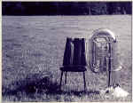

Andrea Hollander Budy
The Life of Inanimate Objects
When her father stopped speaking
it was always to punish. Perhaps she left
the sprinkler sputtering
and flooded the lawn or used a kitchen fork
in the garden. Then, for a day or more
he'd walk past her in the hallway,
or go on eating his toast at breakfast,
dipping it again and again into his coffee,
as though she were only a window
he wasn't in the mood to look through.
Most days she did her chores
with her mouth closed, her mind
to herself, and sometimes for weeks
nothing went wrong.
On the way to school he might suggest
they sing together in the car, impressed
at the long stretch of her good behavior.
The most she ever spent on gifts
she spent on his-an Egyptian leather
wallet he wouldn't use until his old one
fell apart, the painting he'd hung
in their darkest hall so it wouldn't be "ruined"
by light. One night she heard
her mother's cracked voice, ghostlike,
pleading, she suspected, to her father's back,
then to the fleurs-de-lis thriving
on the wallpaper. If they could have,
they would have answered.
HOME
|

(William Wortham)
|
 ‚Üê Back to MarckBeggs.com | Arkansas Literary Forum archive, preserved as originally published
‚Üê Back to MarckBeggs.com | Arkansas Literary Forum archive, preserved as originally published{kind=link}